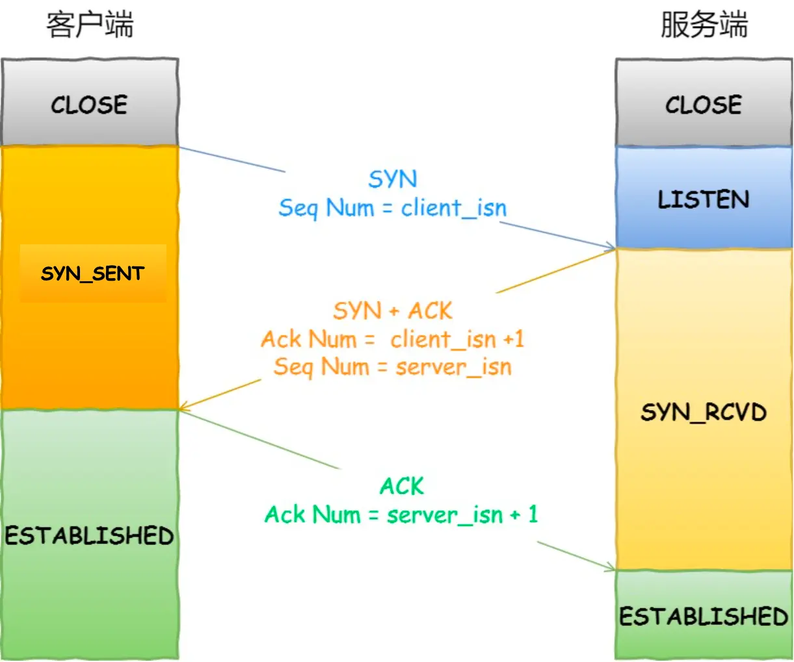

本篇为学习TCP/UDP传输协议的内容，作为webrtc的铺垫。主要参考小林图解网络系列
OSI七层网络模型、简单概述
| OSI七层模型 | 功能 | 对应的网络协议 | TCP/IP四层概念模型 |
|---|---|---|---|
| 应用层 | 文件传输，文件管理，电子邮件的信息处理等应用软件的实现，不关心数据如何传输 | HTTP、TFTP, FTP, NFS, WAIS、SMTP | 应用层 |
| 表示层 | 确保一个系统的应用层发送的消息可以被另一个系统的应用层读取，编码转换，数据解 析，管理数据的解密和加密 |
Telnet, Rlogin, SNMP, Gopher | 应用层 |
| 会话层 | 负责在网络中的两节点建立，维持和终止通信 | SMTP, DNS | 应用层 |
| 传输层 | 定义一些传输数据的协议和端口 | TCP, UDP | 传输层 |
| 网络层 | 控制子网的运行，如逻辑编址，分组传输，路由选择 | IP, ICMP, ARP, RARP, AKP, UUCP | 网络层 |
| 数据链路层 | 主要是对物理层传输的比特流包装，检测保证数据传输的可靠性，将物理层接收的数据进行 MAC（媒体访问控制）地址的封装和解封装 |
FDDI, Ethernet, Arpanet, PDN, SLIP, PPP，STPHDLC,SDLC,帧中继 | 数据链路层 |
| 物理层 | 定义物理设备的标准，主要对物理连接方式，电气特性，机械特性等制定统一标准 | IEEE 802.1A, IEEE 802.2到IEEE 802. | 数据链路层 |
TCP/UDP基础
- TCP（Transmission Control Protocol，传输控制协议）是面向连接的协议，在传输数据之前必须建立一对一的连接。TCP在发送端和接收端之间以字节流的方式传输数据，传输的数据没有明确的边界。在发送数据之前，需要建立连接，并维持连接状态。通过确认、超时重传、流量控制、拥塞控制等机制来保证可靠传输。适用于那些对可靠性要求高的应用场合，例如文件传输、网页浏览、电子邮件等。需要维护连接状态和执行流量控制，通信开销大，可能导致增加延迟和复杂性。FTP（文件传输协议）、HTTP和HTTPS都采用TCP。一台设备上的多个应用在接收或者传输数据，通过端口进行区分。浏览器中的每个标签页通常都是独立的进程，具有不同的端口号。如果数据包大小超过MSS（Maximum Segment Size，最大报文段长度），则会在传输层进行分段。目标主机收到后，同样在传输层组装TCP数据包。如果传输过程中某一分段丢失，则只需重传丢失的那一段。
- UDP（User Datagram Protocol，用户数据报协议）是无连接的协议，可以不建立连接直接发送数据。UDP面向报文，数据以独立的报文为单位进行传输，传输过程中不会合并或拆分这些报文，保持它们的边界（有边界的）。UDP传输速度跨但不保证可靠传输，数据包可能丢失。适用于对实时性要求高但对可靠性要求不高的应用场景，如VoIP、视频直播、在线游戏等。UDP支持一对一、一对多和多对多的通信模式，不提供流量控制，通信开销更低，但也不能避免数据通信的过载问题。被应用于如DHCP、DNS等协议。若UDP数据包的大小超出MTU（Maximum Transmission Unit，最大传输单元）限制，则在IP层进行分片操作，在目标主机被组装完成后才传递到传输层。
TCP/UDP头格式及可靠传输
1 | /*标准的TCP头定义，共20个字节*/ |
- 源端口和目的端口号，与IP首部的源IP和目的IP地址一起，唯一确定一个TCP连接。
- 序列号：用于标识从TCP源到目的端的数据字节流的顺序，用于解决包的乱序问题。在连接建立时用随机数作为初始值，通过SYN包传给接收端，每发送一次数据，
累加一次该数据字节数的大小。接收端需要对数据段发送ACK确认，并包含下一个期望接收的序列号。如果ACK未能在规定时间内到达发送端，该数据段将会被重传。接收端使用序列号将数据重新排列，确保了数据的完整性和正确顺序。 - 确认应答号：接收方期望的下一序列号，确认接收到的数据。发送端收到一个确认应答后可以认为这个序列号之前的数据都被正常接收，用于解决丢包问题。
- 控制位
- URG：紧急指针有效
- ACK：为1「确认应答号」字段有效，TCP 规定除了最初建立连接时的 SYN 包之外该位必须设置为 1 。
- PSH：接收方应尽快将报文段交给应用层
- RST：为1表示 TCP 连接中出现异常必须强制断开连接。
- SYN：为1表示发起一个连接，并在其「序列号」的字段进行序列号初始值的设定。
- FIN：为1表示后边不再有数据发送，将要断开一个连接。通信结束断开连接时，通信双方主机间可以相互交换 FIN 位为 1 的 TCP 段。
TCP 连接用于保证可靠性和流量控制维护的某些状态信息，包括 Socket、序列号和窗口大小称为连接。
- Socket：由 IP 地址和端口号组成，是网络中的一个端点，用于标识网络上的一个特定的应用程序实例。
- 序列号：用于数据包排序，解决乱序问题。
- 窗口大小：控制从发送方到接收方的数据量，用于流量控制，防止接收方处理不过来而导致数据溢出。
确认和超时重传：一种错误控制机制，发送端发送数据后会启动定时器并等待接收端的确认（ACK）。如果发送端在超时时间内未收到ACK（接收端没有回应ACK或者接收端回应了ACK但是发送端还没有收到），发送端会判定那段数据丢失，并重传该数据包。
- 滑动窗口：流量控制机制。发送方和接收方分别维护一个发送窗口和接收窗口。发送窗口的大小限制了未被确认的数据量，接收窗口确定了接收端可接收的最大数据量，未确认数据量不能超过对方的接收窗口。通过调整窗口大小，发送方根据接收方的处理能力来避免发送过多的数据，保证数据传输的可靠性和效率。接收方根据自身的处理情况调整接收窗口大小，并通过确认包将其通知给发送方。如果窗口过小，传输较大数据时需要不断的对数据进行确认，会造成很大的延迟。
- 连接管理：三次握手四次挥手控制连接的建立和终止，确保通信双方在传输数据前后达成一致的状态，避免了数据传输混乱和冲突。
- 拥塞控制：一系列拥塞控制算法，如慢启动、拥塞避免、拥塞发生和快速恢复。慢启动引入拥塞窗口的概念，开始时定义拥塞窗口为1；每次收到一个ACK应答，拥塞窗口加1；在丢包事件发生时会减少，以减轻网络拥塞。发送窗口的大小取决于拥塞窗口和接收方提供的接收窗口的较小值，以控制传入网络的数据量。
TCP三次握手

- 客户端发送连接请求（SYN）：客户端向服务器发送一个带有 SYN 标志位的报文（不包含应用层数据），请求建立连接，并随机初始化一个序列号（client_isn）。这个步骤是客户端发起连接的第一步，客户端此时进入 SYN-SENT 状态。客户端不确定服务器是否收到连接请求，因为可能在网络中丢失或延迟。
- 服务器回应确认（SYN-ACK）：服务器收到客户端的连接请求后，会初始化自己的序列号（server_isn），然后发送一个带有 SYN 和 ACK 标志位的报文（不包含应用层数据）给客户端，表示确认收到了客户端的请求，并同意建立连接。服务器此时进入 SYN-RCVD 状态。客户端收到这个 SYN-ACK 报文后，服务器已经收到了连接请求，但服务端不确定客户端是否收到了这一确认
- 客户端回应确认（ACK）：客户端收到服务器的 SYN-ACK 报文后，发送一个带有 ACK 标志位的报文给服务器，确认收到了服务器的确认，并确认服务器的序列号。客户端和服务器都确认了彼此的连接请求和确认，客户端进入 ESTABLISHED 状态，表示连接已经建立完成，可以开始进行数据传输。服务器收到客户端的 ACK 报文后，也进入 ESTABLISHED 状态。
- 如果只有两次握手，客户端无法确认服务器是否已收到确认，可能导致连接未建立就开始数据传输，从而引发数据丢失或错误。四次就多余了
为什么是三次握手？不是两次、四次？
历史连接请求对系统造成干扰。C发送 SYN（client_isn = 90）报文然后宕机了，此时这个SYN报文还被网络阻塞了，即S并没有收到。接着C重启后又向S建立连接，发送 SYN（client_isn = 100）报文。如果SYN（client_isn = 90）历史连接先到达，S回复，接着C比较希望收到的ACK应该是100+1而不是90+1，所以发起RST报文终止连接。S收到RST释放连接，然后新的client_isn = 100报文到达S，可以正常进行三次握手。两次握手，S没有中间状态给C来阻止历史连接，导致服S可能建立一个历史连接，造成资源浪费。两次握手，S收到SYN报文就进入 ESTABLISHED 状态建立连接，是可以发送数据的。如果历史连接SYN（client_isn = 90）先到达，S进入 ESTABLISHED 状态回复SYN（确认应答号=91），此时C期望的是101而不是91，发起RST终止连接，但是S不知道SYN（client_isn= 90）是历史连接，直到收到RST断开连接。所以两次握手S在向C发送数据前，没有阻止掉历史连接，导致S建立了一个历史连接，又白白发送了数据，浪费了S的资源。所以三次握手在建立连接之前，阻止掉历史连接，这样就不会造成资源浪费
同步双方的初始序列号。在连接建立过程中，SYN和ACK一来一回，交换初始序列号信息，第一次的ACK和第二次的SYN可以合并成一步。两次握手不能同步双方序列号。
避免资源浪费。如果两次握手，C发送SYN，S回复ACK，但是S不知道C是否收到了ACK，所以S每次收到C的SYN就得先主动建立一个连接，然后传输数据。此时如果C的SYN在网络中阻塞了，没收到ACK，就重复发送多个SYN，服务端会建立多个冗余的无效链接，造成资源浪费。
三次握手每次丢失会发生什么
- 第一次握手SYN丢失，客户端不会收到服务端的SYN-ACK响应，触发超时重传，再次发送 SYN 报文（发送次数为
cat /proc/sys/net/ipv4/tcp_syn_retries，在armbian下为6次），通常第一次超时重传为1s，之后每次时间是上一次的2倍。重传多次还是收不到SYN-ACK报文，客户端会断开连接。 - 第二次握手SYN-ACK丢失，客户端触发重传机制，重传SYN报文。服务端收不到第三次握手的ACK报文，出发服务端超时重传机制，重新发送SYN-ACK报文。客户端超时重传次数（cat /proc/sys/net/ipv4/tcp_synack_retries，armbian下为5）。客户端和服务端达到超时重传次数都没收到对方的ACK报文会断开连接。
- 第三次握手ACK丢失，客户端回复ACK后进入ESTABLISH 状态。ACK丢失服务端触发超时重传，重传 SYN-ACK 报文，直到收到客户端的 ACK 报文或者断开连接。如果在这之前客户端开始发送数据报文，服务端收到这些报文后，会认为连接已经被确认并进入ESTABLISHED状态。
为什么每次TCP连接初始化序列号不同
- 防止旧连接的序列号与新连接冲突：一个TCP连接中的数据包因延迟或抖动在网络中阻塞，而C与S开始了新的TCP会话。如果使用相同的序列号，在网络中阻塞的数据包到达S，且在S的接收窗口内，这个数据包会被S正常接收，新旧数据包不容易区分，会被当做新连接的一部分，会造成数据错乱。
- 增加安全性：序列号可预测，容易序列号预测或重放来发起会话劫持攻击。
- TCP全双工，双向传输都有独立的序列号，可以避免发送方和接收方之间潜在的干扰。
IP网络层分片，TCP传输层为什么还要切分
- MTU是网络包最大长度，一般1500字节。MSS是出去IP头和TCP头的网络包最大TCP数据长度，一般1460字节。
- MTU划分，一个IP分片丢了，接收端的网络层就不能组合成一个完整的TCP报文，就没法送到传输层，接收端就不会回复ACK给发送端，发送端就要重传整个IP报文，效率比较低。TCP会将数据切分限制到MSS大小，一个TCP切片丢失，重传一个MSS就行了，效率更高。
TCP四次挥手
- 客户端发送断开请求（FIN）：客户端发送一个带有 FIN 标志位的报文，表示不再发送数据，但仍然愿意接收数据，之后进入 FIN_WAIT_1 状态。这个步骤确保客户端不再发送数据，但仍然可以接收服务器端可能发送的数据。
- 服务器回应确认（ACK）：服务器收到客户端的断开请求后，等待客户端数据发送完毕，然后向客户端发送一个带有 ACK 标志位的报文，表示确认收到客户端的断开请求，确认客户端的请求，并等待客户端的确认。接着服务端进入 CLOSE_WAIT 状态。客户端收到服务端的 ACK 应答报文，进入 FIN_WAIT_2 状态。
- 服务器发送断开请求（FIN）：当服务器的数据发送完毕后，服务器向客户端发送一个带有 FIN 标志位的报文，表示服务器也准备断开连接，进入 LAST_ACK 状态。这个步骤确保服务器不再发送数据，但仍然可以接收客户端可能发送的数据。
- 客户端回应确认（ACK）：客户端收到服务器的断开请求后，向服务器发送一个带有 ACK 标志位的报文，表示接受了服务器的断开请求，并确认。此时客户端进入 TIME_WAIT 状态，等待2MSL（Maximum Segment Lifetime，一个数据包（或报文段）在网络中允许存在的最长时间）进入 CLOSE 状态，以确保可能在网络中滞留的最后一个确认报文能够到达服务器，防止出现连接重启的情况。服务端收到 ACK 后，完成连接的关闭。
为什么四次挥手
- 客户端向服务端发送带有 FIN 标志位的报文，表示不再发送数据，但仍然愿意接收数据。
- 服务端收到客户端的 FIN 报文后，会发送一个 ACK 报文给客户端，表示确认收到了客户端的关闭请求。此时服务端可能还有未发送完的数据，因此并不立即关闭连接。
- 服务端完成了数据的发送和处理后，会发送一个带有 FIN 标志位的报文给客户端，表示同意关闭连接。此时服务端进入 LAST_ACK 状态。
- 客户端收到服务端的 FIN 报文后，会发送一个 ACK 报文给服务端，表示确认收到了服务端的关闭请求。此时客户端进入 TIME_WAIT 状态，等待一段时间（2MSL）以确保可能在网络中滞留的最后一个确认报文能够到达服务端，防止出现连接重启的情况。
- 如果三次握手，可能出现数据未完全传输完成或者一方没有准备好关闭连接的问题，而四次挥手已经能够满足在不同场景下安全关闭连接的需求，所以五次挥手是多余的。
四次挥手每次丢失会发生什么
- 一次挥手丢失，客户端收不到服务端ACK报文，会超时重传，重传FIN报文，直到收到服务端的第二次挥手或者达到最大重传次数直接断开连接。
- 服务端收到客户端的第一次挥手后，会先回一个 ACK 确认报文，此时服务端的连接进入到 CLOSE_WAIT 状态。二次挥手丢失，客户端收不到ACK报文，会重传FIN报文，直到收到服务端的第二次挥手，或者达到最大的重传次数。客户端收到二次挥手进入FIN_WAIT2 状态，等服务端发送第三次挥手。 客户端close 函数关闭的连接，无法再发送和接收数据，所以FIN_WAIT2 状态不可以持续太久，超过时长，客户端会断开连接
- 二次挥手后，服务端处于CLOSE_WAIT 状态时，调用了 close 函数，内核就会发出 FIN 报文，同时连接进入 LAST_ACK 状态，等待客户端返回 ACK 来确认连接关闭。三次挥手丢失，会重传FIN报文，超出次数再等待一定时间还是没有第四次挥手的ACK报文，服务端断开连接。客户端FIN_WAIT2 状态长时间没收到三次挥手，客户端会断开连接。
- 客户端收到服务端的三次挥手的 FIN 报文后，会回 ACK 报文，此时客户端连接进入 TIME_WAIT 状态，TIME_WAIT 状态持续 2MSL后才会进入关闭状态。服务端没有收到 ACK 报文前，还是处于 LAST_ACK 状态，会重发FIN报文。达到最大重传次数并等待一段时间，服务端没收到四次挥手，会断开连接。客户端再2MSL后会断开连接。
UDP面向报文、TCP面向字节流
- 应用程序通过 UDP 发送消息时，操作系统将消息封装为一个 UDP 报文，并将其发送到网络。接收方收到 UDP 报文后，可以确保每个报文就是一个完整的消息，因为 UDP 不会对消息进行拆分或合并。每个 UDP 报文都是独立的，接收方可以根据报文的边界来分别接收和处理消息。
- TCP 将应用程序发送的数据视为连续的字节流，而不考虑消息的边界。应用程序通过 TCP 发送消息时，操作系统将消息拆分成一个个 TCP 报文段，报文段可以被操作系统进行合并或拆分，以适应网络的传输需求。接收方收到的数据流可能会是一系列 TCP 报文段的组合，而不是与发送方发送的消息一一对应。这可能导致接收方需要处理粘包或拆包的情况，即多个消息被合并到一个 TCP 报文段中，或一个消息被拆分成多个 TCP 报文段。
TCP粘包和拆包
- 原因：应用程序一次发送的数据超过TCP套接口发送缓冲区（SO-SNDBUF）的大小；TCP传输的数据大于 MSS（最大报文大小）大小；数据包大小超过IP层MTU限制；拥塞控制，TCP协议调整数据的发送频率，导致数据在到达接收端时被合并或者分割。
- 解决办法：TCP协议基于字节流，没有在传输层维护消息的边界，应用层协议必须实现自己的机制来解决粘包和拆包问题。1）定界符方法，在数据包结尾加上\r\n（ftp，http）等进行区分；2）规定每个数据包长度固定；3）数据包头部指明后续包体长度。